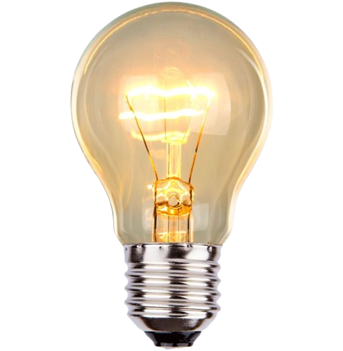
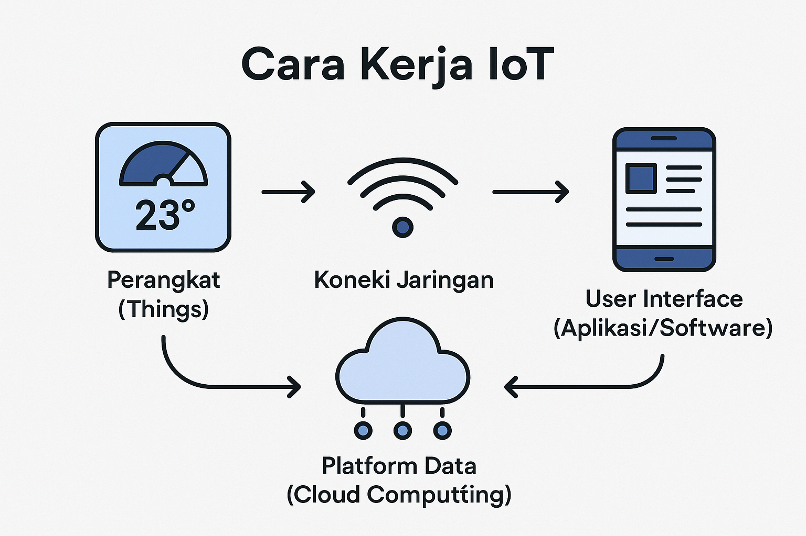
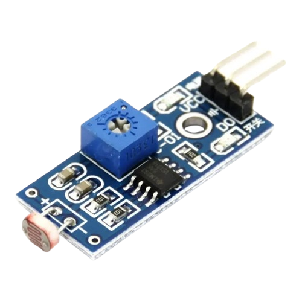

Website ini di berperan sebagai saklar digital yang di peruntukan untuk mengontrol lampu led menggunakn mikrokontroler esp32, riley, dan menggunakan protokol komunikasi HTTP.

Pertama tama esp32 harus terkoneksi dengn akses point, atau biasa di sebut router. Setelah itu masukan alamat ip ke promt yang muncul saat anda pertama kali membuka web. cara kerja dari sistem ini diawali dengan request yang di picu oleh tombol on off dan sinyal request tersebut akan di kirim ke esp32 yang akan memicu LOW HIGH nya riley.

NonAktif
Cara kerja LDR (Light Dependent Resistor) terhadap LED didasarkan pada perubahan nilai resistansi akibat intensitas cahaya yang diterimanya. Saat kondisi gelap, nilai resistansi LDR akan menjadi sangat besar sehingga dapat memicu arus listrik mengalir ke transistor atau langsung ke LED (tergantung desain rangkaiannya) untuk membuat LED menyala; sebaliknya, saat terkena cahaya terang, resistansi LDR akan mengecil yang membuat arus terhambat atau teralihkan sehingga LED mati.
